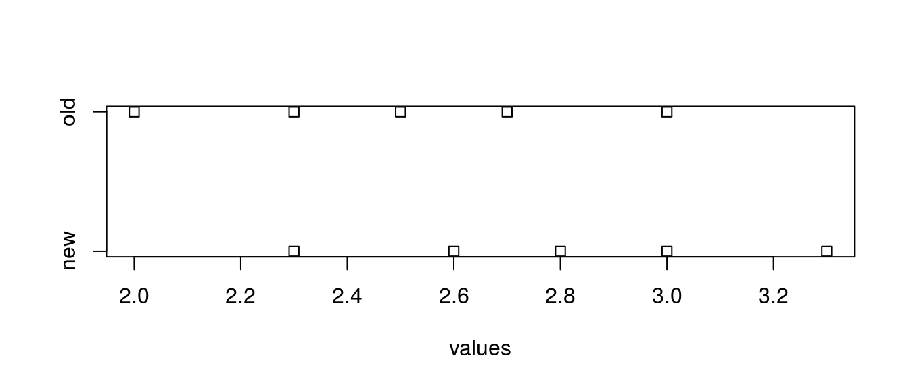
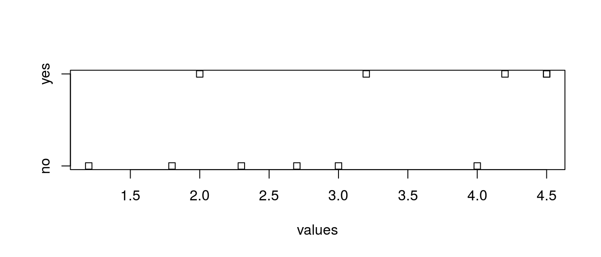
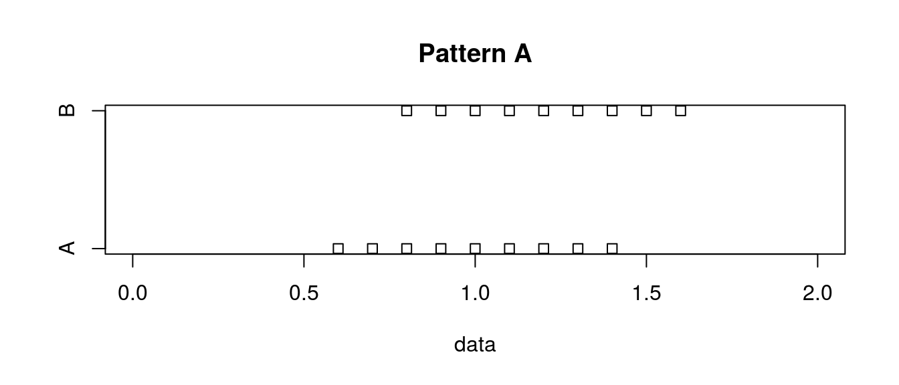
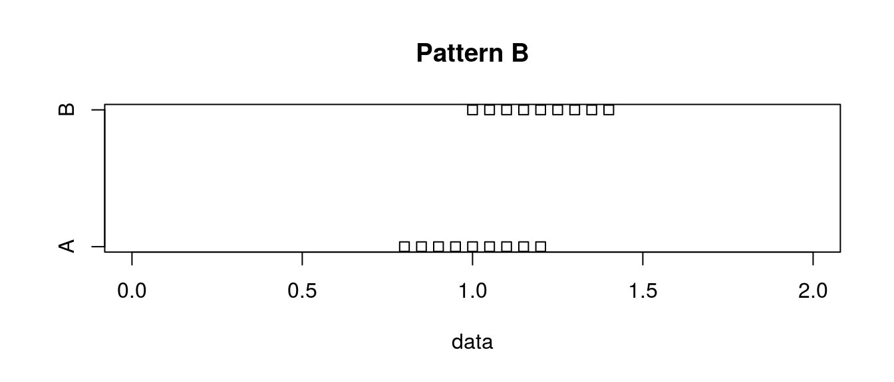
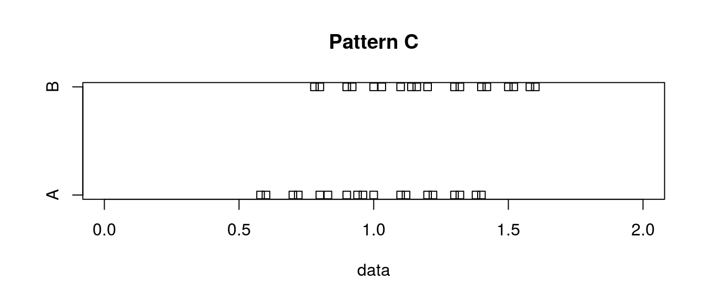
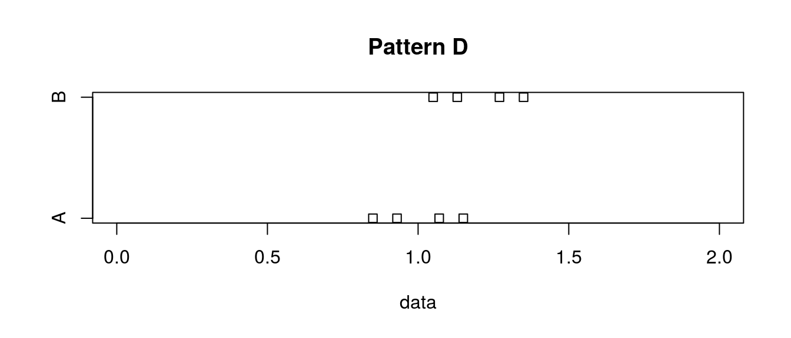

第2章 演習解答例
はじめに
本資料は『ソフトウェアメトリクス統計分析入門』(以降、テキストと記載)の第2章の演習問題をRで解いた際の解答例を示したものです。また、R Markdownを使うメリットを示すための一手段として作成していますので、テキストにおける計算方法とは異なる部分もあります。本資料で使用しているデータの入手に関してはテキストにてご確認下さい。
本資料がHTML形式の場合、Rのコードを参照するには右側にある[Code]ボタンをクリックして下さい。なお、JavaScriptは必ずOnにしてご覧下さい。
演習問題
第2章は全ての演習問題でダウンロードファイル内の「第2章_例題演習データ」ファイルの各シートにある演習データを使用します。
演習 2.1
あるアウトソース先から100個のモジュールが納品されました。納品されたモジュールの品質を確認するために10個のモジュールをサンプリングして受入確認テストを実施しました。 その結果、各モジュールの欠陥密度は以下のとおりでした。
欠陥密度： 2.8, 5.2, 5.3, 4.7, 4.8, 5.8, 4.0, 2.2, 2.1, 3.5
この組織ではプロジェクトトータルの欠陥密度の標準値が3.0 となっており、今回納品されたモジュール全体の平均がその組織標準を超えていそうならば受入はせず、品質を高めてから再納品してもらうことを考えています。 そのためにはアウトソース先にも納得できる形で、判断の根拠を示す必要があります。受入の許可か拒否か、どちらが妥当な判断といえるでしょうか。
データの設定
本演習で利用するデータの数は多くなので、直接、Rのコードで変数として設定します。
ref <- c(3.0) # 標準値
dd <- c(2.8, 5.2, 5.3, 4.7, 4.8, 5.8, 4.0, 2.2, 2.1, 3.5) # 欠陥密度検定
固定的な基準値に対してサンプリングデータの平均値に差があるかどうかを確認しますので、例題2.2と同じ1標本t検定を用います。対立仮説（帰無仮説）については省略。
# 返り値をinline chunkで利用するために一度、変数に代入する
result.t.test <- t.test(dd, alternative = "less", mu = ref)
result.t.test##
## One Sample t-test
##
## data: dd
## t = 2.4647, df = 9, p-value = 0.9821
## alternative hypothesis: true mean is less than 3
## 95 percent confidence interval:
## -Inf 4.813488
## sample estimates:
## mean of x
## 4.04検定の結果\(p = 0.9820604\)、95%信頼区間は(\(-\infty{}, 4.8134877\))となり、帰無仮説は棄却されませんでしたので、基準値より納入されたモジュールの欠陥密度の平均値が小さいとは言えず、受入れは基準に達して いるとは言いがたく、受入れ拒否とみなせます。
演習 2.2
テスト技法の改善を行いました。実験として5つのモジュールに対して、新旧2つの技法を用いてテストを行い、以下の欠陥密度のデータを得ました。 新技法は欠陥検出能力が向上したといえるでしょうか。
データの設定
本演習で利用するデータは予めCSVファイルとして保存されているものとします。
データの確認
x.stacked <- stack(x)
stripchart(values ~ ind, data = x.stacked)
検定
# 返り値をinline chunkで利用するために一度、変数に代入する
result.t.test <- t.test(x$new, x$old, alternative = "greater", paired=TRUE)
result.t.test <- t.test(values ~ ind, data = x.stacked, alternative = "greater", paired=TRUE)
result.t.test##
## Paired t-test
##
## data: values by ind
## t = 2.7386, df = 4, p-value = 0.02599
## alternative hypothesis: true difference in means is greater than 0
## 95 percent confidence interval:
## 0.06646789 Inf
## sample estimates:
## mean of the differences
## 0.3検定の結果\(p = 0.0259898\)、95%信頼区間は\((0.0664679, \infty{})\)となり、帰無仮説は棄却されましたので、平均値の差に 有意差があり、新技法は欠陥検出能力が向上しているといえます。
演習 2.3
開発時の品質状況を示すメトリクスとリリース後の品質問題の有無の関連性を示すために、リリースして1年以上経過したプロジェクトを品質問題の有無の2つに分けて、それぞれの開発終了時のシステムテストでの欠陥密度のデータを比較することにしました。 得られたデータは以下のとおりです。システムテストでの欠陥密度とリリース後の品質問題の有無の関連性はあるといえるでしょうか。
データの設定
本演習で利用するデータは予めCSVファイルとして保存されているものとします。
データの変換
本演習のデータは、「欠陥あり」と「欠陥なし」は異なるプロジェクトであることから独立サンプルt検定t.test {stats}にて有意差を確認します。 読み込んだデータは2変数のデータフレームになっていますので、独立サンプルt検定を行うために以下のように1変数と因子の形に変換しておきます。
x.stacked <- stack(x)
# 念の為にNAを含むデータを外す
x.stacked <- na.omit(x.stacked)
df_print(x)| yes | no |
|---|---|
| 4.5 | 2.7 |
| 2.0 | 1.2 |
| 4.5 | 2.3 |
| 3.2 | 1.8 |
| 4.2 | 3.0 |
| NA | 4.0 |
データの確認
stripchart(values ~ ind, data = x.stacked)
検定
変換したデータを用いて、その分布を確認し等分散か否かをF検定var.test {stats}で確認します。
# var.test(x$yes, x$no, alternative = "less")
var.test(x$yes, x$no, alternative = "two.sided")##
## F test to compare two variances
##
## data: x$yes and x$no
## F = 1.2258, num df = 4, denom df = 5, p-value = 0.8106
## alternative hypothesis: true ratio of variances is not equal to 1
## 95 percent confidence interval:
## 0.1659257 11.4793461
## sample estimates:
## ratio of variances
## 1.22584F検定の結果、帰無仮説は棄却されなかったので、2つのデータは等分散とは言えないのでWelchのt検定t.test {stats}を用います。
# 返り値をinline chunkで利用するために一度、変数に代入する
result.t.test <- t.test(values ~ ind, alternative = "two.sided",
var.equal = FALSE, data = x.stacked)
result.t.test##
## Welch Two Sample t-test
##
## data: values by ind
## t = -1.8845, df = 8.2404, p-value = 0.09516
## alternative hypothesis: true difference in means is not equal to 0
## 95 percent confidence interval:
## -2.6166094 0.2566094
## sample estimates:
## mean in group no mean in group yes
## 2.50 3.68検定の結果\(p = 0.0951584\)、95%信頼区間は\((-2.6166094, 0.2566094)\)となり、帰無仮説は棄却されませんしたので、平均値の差に有意差があるとは言えず、システムテストでの欠陥密度とリリース後の品質問題の有無の「関連性はある」とも言えません。
演習 2.4
ベースとなるシステムに改良を加えました。そして。改良システムのユーザビリティテストを行い、ベースシステムとの比較で以下の5段階評価を行いました。
1：非常に使いづらい
2：使いづらい
3：あまり変わらない
4：使いやすい
5：非常に使いやすい被験者10名のそれぞれの評点は以下のとおりです。改良システムはベースシステムに比べて使いやすくなったといえるでしょうか。
データの設定
本演習で利用するデータは予めCSVファイルとして保存されているものとします。
検定
演習2.2と同じで固定的な基準値(3:あまり変わらない)に対するアンケート結果の平均の差があるかどうかを見ることから「1標本t検定」を用います。Rで1標本t検定を行う場合、t.test {stats}を使い、対立仮説（帰無仮説）は基準値(\(\mu_0\))に対するアンケートの平均値(\(\mu\))として以下の3通りが考えられます。
- \(\mu \neq \mu_0\) （帰無仮説 \(\mu = \mu_0\)）
- \(\mu < \mu_0\) （帰無仮説 \(\mu \geq \mu_0\)）
- \(\mu > \mu_0\) （帰無仮説 \(\mu \leq \mu_0\)）
設問として「使いやすくなったと言えるか？」なので、アンケートの5段階評価の平均値が\(\mu > \mu_0\)（帰無仮説 \(\mu \leq \mu_0\)）となるかを検定します。
# 返り値をinline chunkで利用するために一度、変数に代入する
result.t.test <- t.test(x$evaluation, alternative = "greater", mu = 3.0)
result.t.test##
## One Sample t-test
##
## data: x$evaluation
## t = 2.3333, df = 9, p-value = 0.02225
## alternative hypothesis: true mean is greater than 3
## 95 percent confidence interval:
## 3.150066 Inf
## sample estimates:
## mean of x
## 3.7検定の結果p値は\(p = 0.0222518\)であり帰無仮説は棄却され、平均値は\(\mu = 3.7\)、95%信頼区間は\((3.1500661, \infty{})\)であることから改良システムは使いやすくなったと言えます。
演習 2.5
図2.16 に4 パターンのA とB の2 群データを示します。 いずれのパターンも平均はA群が1.2でB群が1.0 なっており、 平均の差は0.2で統一されています。 また、A群とB群のデータ数と標準偏差（n－1で割ったもの）の値も同じです。 グラフはA群とB群のデータ分布の違いを可視化しています。4つのパターンの違いは表2.5のとおりです。
(表2.5 4パターンのデータセットの各種指標の違い)
パターン 平均値の差 データ数 標準偏差 パターン1 0.2 9 0.27 パターン2 0.2 9 0.14 パターン3 0.2 18 0.27 パターン4 0.2 4 0.14 これらの数値を使えばt値およびp値を算出して有意差の違いを確認できますが、まずは図2.16のグラフだけを見て、パターン1と比較して、パターン2～4のp値の大きさの違いを予想してみてください。 そしてその後それぞれのパターンの検定結果のp値を算出して、予想が合っていたかを確認してください．

図2.16
データの設定
本演習で利用するデータは予めCSVファイルとして保存されているものとします。
データの確認
# stripchart(data.1 ~ group.1, xlim = c(0, 2), data = na.omit(x[1:2]))
# stripchart(data.2 ~ group.2, xlim = c(0, 2), data = na.omit(x[3:4]))
# stripchart(data.3 ~ group.3, xlim = c(0, 2), data = na.omit(x[5:6]))
# stripchart(data.4 ~ group.4, xlim = c(0, 2), data = na.omit(x[7:8]))
# NAを削除するためにna.omit {stats}、NULL因子を削除するためにdroplevels {base}を
# 用います
stripchart(data ~ group, xlim = c(0, 2), data = droplevels(na.omit(x[1:2])),
main = "Pattern A")
with(droplevels(na.omit(x[1:2])), tapply(data, INDEX = group, FUN = mean))## A B
## 1.0 1.2with(droplevels(na.omit(x[1:2])), tapply(data, INDEX = group, FUN = sd))## A B
## 0.2738613 0.2738613stripchart(data ~ group, xlim = c(0, 2), data = droplevels(na.omit(x[3:4])),
main = "Pattern B")
with(droplevels(na.omit(x[3:4])), tapply(data, INDEX = group, FUN = mean))## A B
## 1.0 1.2with(droplevels(na.omit(x[3:4])), tapply(data, INDEX = group, FUN = sd))## A B
## 0.1369306 0.1369306stripchart(data ~ group, xlim = c(0, 2), data = droplevels(na.omit(x[5:6])),
main = "Pattern C")
with(droplevels(na.omit(x[5:6])), tapply(data, INDEX = group, FUN = mean))## A B
## 1.003889 1.203889with(droplevels(na.omit(x[5:6])), tapply(data, INDEX = group, FUN = sd))## A B
## 0.2654882 0.2654882stripchart(data ~ group, xlim = c(0, 2), data = droplevels(na.omit(x[7:8])),
main = "Pattern D")
with(droplevels(na.omit(x[7:8])), tapply(data, INDEX = group, FUN = mean))## A B
## 1.0 1.2with(droplevels(na.omit(x[7:8])), tapply(data, INDEX = group, FUN = sd))## A B
## 0.1351542 0.1351542おまけ
t.test {stats}でのt検定
t.test {stats}関数は、引数の指定により様々なt検定を行えます。そこで、t検定の種類とt.test {stats}での計算方法を整理しておきます。
| 標本 | 関係 | 分散 | 指定方法 |
|---|---|---|---|
| 1標本の | N/A | N/A | t.test(x, mu = a) |
| 2群間の | 対応のない | 等分散 | t.test(x, y, var.equal = TRUE) |
| 2群間の | 対応のない | 不等分散 | t.test(x, y, var.equal = FALSE) |
| 2群間の | 対応のある | N/A | t.test(x, y, paired = TRUE) |
なお、muの既定値は0。var.equal、pairedの既定値は共にFALSEです。
2群間の検定については、formula形式を用いた指定も可能で、データフレームxにおいて数値value、層別変数factorにデータが格納されているとした場合、以下のように指定します。
# 2群間の対応のない（等分散） - 独立サンプルt検定はこの計算式@Rcmdr
t.test(value ~ factor, data = x, var.equal = TURE)
# 2群間の対応のない（不等分散） - 独立サンプルt検定はこの計算式@Rcmdr
t.test(value ~ factor, data = x, var.equal = FALSE)
# 2群間の対応のある - 対応のあるt検定はこの計算式を使わない@Rcmdr
t.test(value ~ factor, data = x, paired = TURE)factorは因子名でソートされた順で評価されますので、順番に注意して下さい。
t.test {stats}での対立仮説指定方法
１標本の場合
対立仮説alternative hypothesisの指定（引数alternative）は1標本の場合、
t.test(x, mu = mu0, alternative = "option")と指定し、平均\(\mu\)と基準値(比較値)\(\mu_0\)に対して下表のようになります。
| 対立仮説 （帰無仮説） | 指定方法 |
|---|---|
| \(\mu \neq \mu_0\) （\(\mu = \mu_0\)） | alternative = “two.sided” |
| \(\mu < \mu_0\) （\(\mu \geq \mu_0\)） | alternative = “less” |
| \(\mu > \mu_0\) （\(\mu \leq \mu_0\)） | alternative = “greater” |

1標本t検定
２群間の場合
対応のある2群間の場合は、以下のように指定し
t.test(x, y, alternative = "option", ...)対立仮説の指定(引数alternative)は平均の差（\(\delta = \mu_x - \mu_y\)）に対して下表のようになります。
| 対立仮説 （帰無仮説） | 指定方法 |
|---|---|
| \(\delta \neq 0\) （\(\delta = 0\)） | alternative = “two.sided” |
| \(\delta < 0\) （\(\delta \geq 0\)） | alternative = “less” |
| \(\delta > 0\) （\(\delta \leq 0\)） | alternative = “greater” |

対応のあるt検定
対応のない2群間の場合は同様の指定で、平均の差（\(\delta = \mu_x - \mu_y\)）で考える場合は上表のように平均値\(\mu_x\), \(\mu_y\)に対して考える場合は下表のようになります。
| 対立仮説 （帰無仮説） | 指定方法 |
|---|---|
| \(\mu_x \neq \mu_y\) （\(\mu_x = \mu_y\)） | alternative = “two.sided” |
| \(\mu_x < \mu_y\) （\(\mu_x \geq \mu_y\)） | alternative = “less” |
| \(\mu_x > \mu_y\) （\(\mu_x \leq \mu_y\)） | alternative = “greater” |

独立サンプルt検定
formula形式で指定した場合は、因子順にx, yと読み替えて下さい。また、他のオプションについてはヘルプで確認して下さい。
 CC BY-NC-SA 4.0, Sampo Suzuki [2017-04-22 14:23(JST)]
CC BY-NC-SA 4.0, Sampo Suzuki [2017-04-22 14:23(JST)]